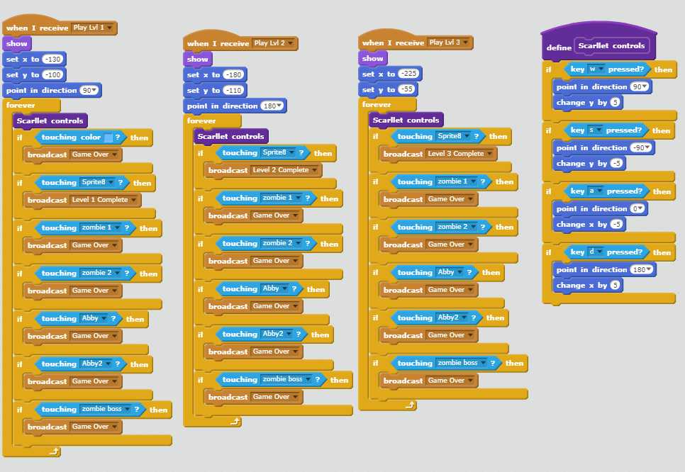
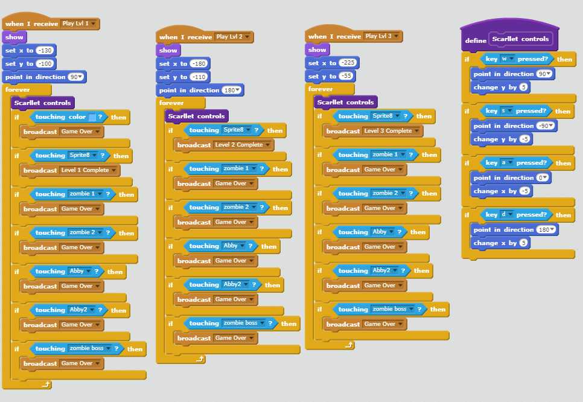
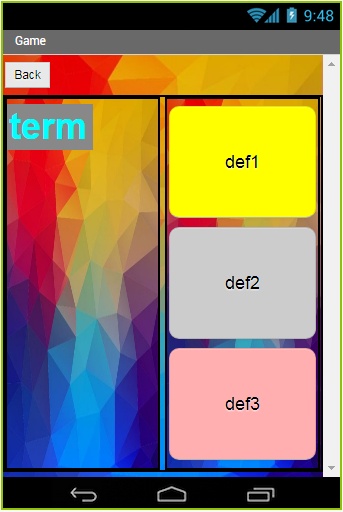
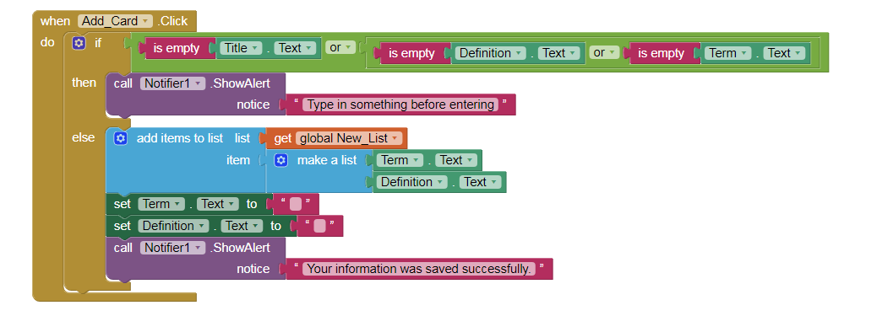
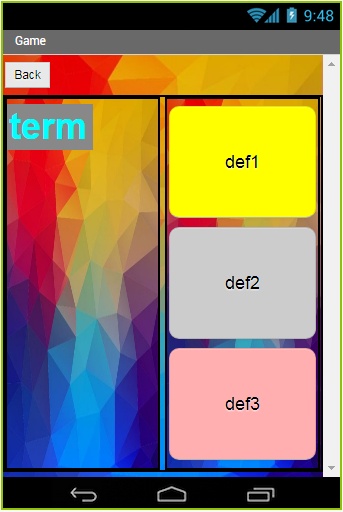
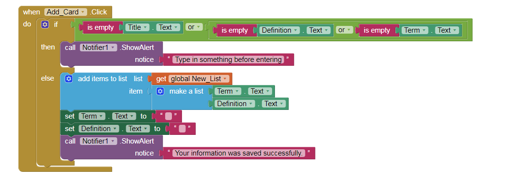

My partners and I created a mini game called Zombie Warfare. Through Scratch, I used the block programming language to code the functions for the characters of the game. For instance, the character, Scarlett, is controlled by functions which we implemented as an algorithm so that it acts as a loop for all levels of the game. This applies to the game because her controls were movements based on what keys were pressed. The gamer is supposed to have free control over the character throughout the game. A problem I had was simplifying my code. I found that I had to continuously code my character's functions throughout the levels, which was tedious. So, to fix this, I defined a function called, "Scarlett Controls" on her script. This function was useful because it allowed me to apply to Scarlett's controls during each level of the game to reduce the amount of coding in each level. In the coding shown above, you can see the purple block, which contains her movements. I was then able to use this block code and apply it to the leves. I placed the defined function under each "When I receive: level 1, level 2, and level 3" so that when the gamer was transitioned to the next leve, they could still be able to control Scarlet's movements. One thing I learned is that an algorithm can be used to repeat certain functions or controls to make the coding simple, but efficient.

 



My program called "Quiz Game" is an application that is directed mainly to students to help them test themselves on terms and definitions that they need to study for any upcoming tests or fun. Using my app, they can create a list of flashcards and put their terms with corresponding definitions. This application is helpful because it tests them on whether they know the definitions of the terms they input. The Quiz game randomizes the definitions as the answer choices. I used an algorithm to enable the user to input their terms and definitions into a list. The list contains their terms and corresponding definitions. One of my difficulties while making this application was figuring out how to save the user's information, such as the list they title and the terms with definitions under the specific category of list that they create. To save their information, I used a data base to store it. The data base called their information if it was needed. For example, whenever the user chooses a list of terms they want to be quizzed on, the information is then retrieved from the data base in the program where it is stored and will display on their screen.